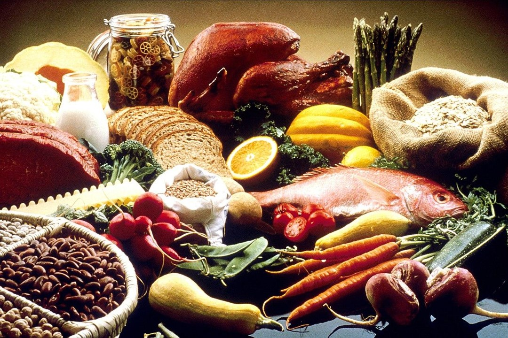

What's on the menu? Analyzing food trends
Meet the team:

Jason Chang
MIDS student, XX term
Andres Nieto
MIDS student, 2nd term
Mike Mandujano
MIDS student, XX term
Mauricio Perez
MIDS student, 3th term
Food consumption and trends are dynamic, shaped by government policies, social media, cultural shifts, economic factors, and health movements. Dive in to understand food trends in the US! Our different sections will reveal patterns related to caloric consumption/intake, land usage, search trends, and nutritional evolution, gaining insights into the drivers of change and their implications for health, policy, and industry.
